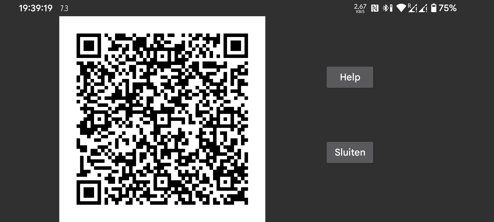

Je kunt de andere kant van een kloon verbinding configureren door een QR-code te scannen met het linkermenu → Foto op de andere telefoon.
Met linker midden menu → Kloon → Auto QR worden beide kanten van de verbinding automatisch gegenereerd. Je kunt het gebruiken om alle gegevens van deze telefoon naar een andere telefoon te sturen.
Op deze manier kunnen er onbedoeld veel verbindingen ontstaan. Je kunt ze verwijderen door erop te tikken en op Wijzig en vervolgens op Verwijderen te drukken .
Gebruik het linker midden menu → Kloon → Verbinding toevoegen → QR om handmatig één kant van de verbinding op één telefoon te configureren en configureer de andere kant door de QR-code te scannen.